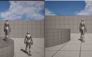
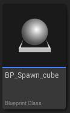

historia Inc – 株式会社ヒストリア
https://historia.co.jp
ゲームの企画・開発・制作協力の株式会社ヒストリアです。UE4やVRの最先端技術を使ってPlayStation®4などのコンシューマーゲームやアーケードゲーム、デジタルコンテンツを創出し、人生観を変えるような体験を提供します。
フィード

[UE5] 切断したプレイヤーの Pawn をサーバーでは残す
historia Inc – 株式会社ヒストリア
執筆バージョン: Unreal Engine 5.3 こんにちは！マルチプレイヤーゲームを作っていて、こんなことを思ったことはないでしょうか？ 「マルチプレイ中、切断したプレイヤーがいても Pawn は残したいな～」 ゲ […]The post [UE5] 切断したプレイヤーの Pawn をサーバーでは残す first appeared on historia Inc - 株式会社ヒストリア.
2日前

[UE5]UE5で簡単なゲームを作ってみた【5/5：UIを作成するの巻】
historia Inc – 株式会社ヒストリア
執筆バージョン: Unreal Engine 5.1.1 確認 開始する前に、今回もゲームの仕様を確認してみましょう。（前回の記事はこちらから） ４ 弾が当たると爆発四散するCUBE ＜－－完成。 ５ CU […]The post [UE5]UE5で簡単なゲームを作ってみた【5/5：UIを作成するの巻】 first appeared on historia Inc - 株式会社ヒストリア.
9日前

[UE5]UE5で簡単なゲームを作ってみた【4/5：CubeをSpawnさせるの巻】
historia Inc – 株式会社ヒストリア
執筆バージョン: Unreal Engine 5.1.1 確認 前回でCubeの作成が一旦完成しましたので、またゲームの仕様を確認してみましょう。 ４ 弾が当たると爆発四散するCUBE ＜－－ […]The post [UE5]UE5で簡単なゲームを作ってみた【4/5：CubeをSpawnさせるの巻】 first appeared on historia Inc - 株式会社ヒストリア.
16日前
神戸電子専門学校 サウンドクリエイト学科の授業に「ダンジョン＆バーグラー」を提供いたしました
historia Inc – 株式会社ヒストリア
弊社のオリジナルゲーム「ダンジョン＆バーグラー」のプロジェクトデータを神戸電子専門学校 サウンドクリエイト学科の授業に提供いたしました。 「ダンジョン＆バーグラー」は全30階層のダンジョンを進んで行くダンジョンクリア型の […]The post 神戸電子専門学校 サウンドクリエイト学科の授業に「ダンジョン＆バーグラー」を提供いたしました first appeared on historia Inc - 株式会社ヒストリア.
18日前
【SLASHH：UEFNタイトル第六弾】カラクリ屋敷×忍者デスラン！『200Levels Ninja Punisher』マップコードを公開！
historia Inc – 株式会社ヒストリア
フォートナイト内で遊べるカラクリ屋敷×忍者デスラン！『200Levels Ninja Punisher』のマップコードを公開しました。 SLASHHのUEFNタイトル第六弾となります。ぜひプレイしてみてください。 マップ […]The post 【SLASHH：UEFNタイトル第六弾】カラクリ屋敷×忍者デスラン！『200Levels Ninja Punisher』マップコードを公開！ first appeared on historia Inc - 株式会社ヒストリア.
21日前
[UE5]初心者向け！回転するコーヒーカップのアトラクションを作ろう
historia Inc – 株式会社ヒストリア
執筆バージョン: Unreal Engine 5.4.2 こんにちは！今回は第22回ぷちコンのテーマ「ゆうえんち」にちなんで、 UEで「ものを回転させる」方法について解説しながら、乗ることもできる「コーヒー […]The post [UE5]初心者向け！回転するコーヒーカップのアトラクションを作ろう first appeared on historia Inc - 株式会社ヒストリア.
22日前
第22回UE5ぷちコン 協賛社ライセンス一覧
historia Inc – 株式会社ヒストリア
2024年7月19日（金）～9月8日（日） Unreal Engine 5 学習向けミニコンテスト 第22回UE5ぷちコン開催中！ 今回のテーマは「ゆうえんち」 今回もたくさんのスポンサー企業さまにご協賛い […]The post 第22回UE5ぷちコン 協賛社ライセンス一覧 first appeared on historia Inc - 株式会社ヒストリア.
22日前
第22回UE5ぷちコン ゲームジャム開催のお知らせ
historia Inc – 株式会社ヒストリア
2024年7月19日（金）～9月8日（日） Unreal Engine 5学習用コンテスト「第22回UE5ぷちコン」を開催中！ 今回のテーマは「ゆうえんち」 「第22回UE5ぷちコン ゲームジャム」開催決定 […]The post 第22回UE5ぷちコン ゲームジャム開催のお知らせ first appeared on historia Inc - 株式会社ヒストリア.
22日前
[UE5]UE5で簡単なゲームを作ってみた【3/5：爆発するBOXの巻（下）】
historia Inc – 株式会社ヒストリア
執筆バージョン: Unreal Engine 5.1.1 確認 前回はCubeの一部機能を実装しました 今回は引き続き下半分の実装を一気に終わらせましょう。 １ 弾が当たると爆発します。＜－完成 ２ 爆発す […]The post [UE5]UE5で簡単なゲームを作ってみた【3/5：爆発するBOXの巻（下）】 first appeared on historia Inc - 株式会社ヒストリア.
23日前
[UE5]UE5で簡単なゲームを作ってみた【2/5：爆発するBOXの巻（上）】
historia Inc – 株式会社ヒストリア
執筆バージョン: Unreal Engine 5.1.1 確認 前回はゲームを作成する前の下準備をしました。 今回はゲームを作り始めます。まずは作る物LISTを確認してみましょう。自作しないとだめな部分はこ […]The post [UE5]UE5で簡単なゲームを作ってみた【2/5：爆発するBOXの巻（上）】 first appeared on historia Inc - 株式会社ヒストリア.
1ヶ月前